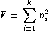

Information relevant to individual loci is reported. Sample
size and allele counts will differ among loci if not all
individuals were typed at each locus. Untyped individuals are
those for which one or two alleles were not reported. The alleles
are listed in descending frequency (and count) in the left hand
column, and are sorted numerically in the right column. The
number of distinct alleles k is
reported.
Example 3.2. Basic locus information sample output
I. Single Locus Analyses ======================== 1. Locus: A ___________ 1.1. Allele Counts [A] ---------------------- Untyped individuals: 2 Sample Size (n): 45 Allele Count (2n): 90 Distinct alleles (k): 10 Counts ordered by frequency | Counts ordered by name Name Frequency (Count) | Name Frequency (Count) 0201 0.21111 19 | 0101 0.13333 12 0301 0.15556 14 | 0201 0.21111 19 0101 0.13333 12 | 0210 0.10000 9 2501 0.12222 11 | 0218 0.10000 9 0210 0.10000 9 | 0301 0.15556 14 0218 0.10000 9 | 2501 0.12222 11 3204 0.08889 8 | 3204 0.08889 8 6901 0.04444 4 | 6814 0.03333 3 6814 0.03333 3 | 6901 0.04444 4 7403 0.01111 1 | 7403 0.01111 1 Total 1.00000 90 | Total 1.00000 90
In the cases where there is no information for a locus, a message is displayed indicating lack of data.
Sample output:
4. Locus: DRA _____________ No data for this locus!
For each locus, the observed genotype counts are compared to
those expected under Hardy Weinberg proportions (HWP). A
triangular matrix reports observed and expected genotype counts.
If the matrix is more than 80 characters, the output is split into
different sections. Each cell contains the observed and expected
number for a given genotype in the format
observed/expected.
Example 3.3. Sample output of Hardy-Weinberg genotype table
6.2. HardyWeinberg [DQA1]
-------------------------
Table of genotypes, format of each cell is: observed/expected.
0201 8/5.1
0301 4/4.0 1/0.8
0401 3/6.9 1/2.7 6/2.3
0501 8/9.9 5/3.8 5/6.7 6/4.8
0201 0301 0401 0501
[Cols: 1 to 4]
The values in this matrix are used to test hypotheses of
deviation from HWP. The output also includes the chi-square
statistic, the number of degrees of freedom and associated
p-value for a number of classes of
genotypes and is summarized in the following table:
Example 3.4. Sample output of HW genotype classes
Observed Expected Chi-square DoF p-value
------------------------------------------------------------------------------
Common N/A N/A 4.65 1 0.0310*  ------------------------------------------------------------------------------
Lumped genotypes N/A N/A 1.17 1 0.2797
------------------------------------------------------------------------------
Lumped genotypes N/A N/A 1.17 1 0.2797  ------------------------------------------------------------------------------
Common + lumped N/A N/A 5.82 1 0.0158*
------------------------------------------------------------------------------
Common + lumped N/A N/A 5.82 1 0.0158*  ------------------------------------------------------------------------------
All homozygotes 21 13.01 4.91 1 0.0268*
------------------------------------------------------------------------------
All homozygotes 21 13.01 4.91 1 0.0268*  ------------------------------------------------------------------------------
All heterozygotes 26 33.99 1.88 1 0.1706
------------------------------------------------------------------------------
All heterozygotes 26 33.99 1.88 1 0.1706  ------------------------------------------------------------------------------
Common heterozygotes by allele
------------------------------------------------------------------------------
Common heterozygotes by allele  0201 15 20.78 1.61 0.2050
0301 10 10.47 0.02 0.8850
0401 9 16.31 3.28 0.0703
0501 18 20.43 0.29 0.5915
------------------------------------------------------------------------------
Common genotypes
0201 15 20.78 1.61 0.2050
0301 10 10.47 0.02 0.8850
0401 9 16.31 3.28 0.0703
0501 18 20.43 0.29 0.5915
------------------------------------------------------------------------------
Common genotypes  0201:0201 8 5.11 1.63 0.2014
0201:0401 3 6.93 2.23 0.1358
0201:0501 8 9.89 0.36 0.5472
0401:0501 5 6.70 0.43 0.5109
Total 24 28.63
------------------------------------------------------------------------------
0201:0201 8 5.11 1.63 0.2014
0201:0401 3 6.93 2.23 0.1358
0201:0501 8 9.89 0.36 0.5472
0401:0501 5 6.70 0.43 0.5109
Total 24 28.63
------------------------------------------------------------------------------
Explanation of each genotype class
| Common. The result for goodness of fit to HWP using only the
genotypes with at least If the dataset contains no genotypes with expected counts
equal or greater than No common genotypes; chi-square cannot be calculated The analysis of common genotypes may lead to a situtation where there are fewer classes (genotypes) than allele frequencies to estimate. This means that the analysis cannot be performed (degrees of freedom < 1). In such a case the following message is reported, explaining why the analysis could not be performed: Too many parameters for chi-square test. To obviate this as much as possible, only alleles which occur in common genotypes are used in the calculation of degrees of freedom. |
| Lumped genotypes. The result for goodness of fit to HWP for the pooled set
of genotypes that individually have less than
The pooling procedure is designed to avoid carrying out the chi-square goodness of fit test in cases where there are low expected counts, which could lead to spurious rejection of HWP. However, in certain cases it may not be possible to carry out this pooling approach. The interpretation of results based on lumped genotypes will depend on the particular genotypes that are combined in this class. If the sum of expected counts in the lumped class does not
add up to
The total number of expected genotypes is less than 5
This may by remedied by combining rare alleles and
recalculating overall chi-square value and degrees of freedom.
(This would require appropriate manipulation of the data set by
hand and is not a feature of
|
| Common + lumped. The result for goodness of fit to HWP for both the common and the lumped genotypes. |
| All homozygotes. The result for goodness of fit to HWP for the pooled set of homozygous genotypes. |
| All heterozygotes. The result for goodness of fit to HWP for the pooled set of heterozygous genotypes. |
| Common heterozygotes. The common heterozygotes by allele section summarizes the
observed and expected number of counts of all heterozygotes
carrying a specific allele with expected value ≥
|
| Common genotypes. The common genotypes by genotype section lists observed,
expected, chi-square and |
If enabled in the configuration file, the exact test for
deviations from HWP will be output. The exact test uses the method
of Guo & Thompson (1992). The
p-value provided describes how probable the
observed set of genotypes is, with respect to a large sample of
other genotypic configurations (conditioned on the same allele
frequencies and 2n).
p-values lower than 0.05 can be interpreted as
evidence that the sample does not fit HWP. In addition, those
individual genotypes deviating significantly (p-values < 0.05)
from expected HWP as computed with the Chen and "diff" measures are reported.
There are two implementations for this test, the first using
the gthwe implementation originally due
to Guo & Thompson, but modified by John Chen, the second being
Arlequin's
(Schneider et al., 2000) implementation.
Example 3.5. Sample output for exact test using
gthwe
6.3. Guo and Thompson HardyWeinberg output [DQA1] ------------------------------------------------- Total steps in MCMC: 1000000 Dememorization steps: 2000 Number of Markov chain samples: 1000 Markov chain sample size: 1000 Std. error: 0.0009431 p-value (overall): 0.0537
Example 3.6. Sample output for exact test using the
Arlequin implementation
6.4. Guo and Thompson HardyWeinberg output(Arlequin's implementation) [DQA1] ----------------------------------------------------------------------------- Observed heterozygosity: 0.553190 Expected heterozygosity: 0.763900 Std. deviation: 0.000630 Dememorization steps: 100172 p-value: 0.0518
Note that in the Arlequin
implementation, the output is slightly different, and the
only directly comparable value between the two implementation is
the p-value. These
p-values may be slightly different, but should
agree to within one significant figure.
For each locus, we implement the Ewens-Watterson homozygosity
test of neutrality (Ewens 1972; Watterson 1978). We use the term
observed homozygosity to denote the
homozygosity statistic (F), computed as the sum
of the squared allele frequencies. This value is compared to the
expected homozygosity which is computed by
simulation under neutrality/equilibrium expectations, for the same
sample size (2n) and number of unique alleles
(k). Note that the homozygosity
F statistic, , is often referred to as the
expected
homozygosity (with expectation referring to
HWP) to distinguish it from the observed proportion of
homozygotes. We avoid referring to the observed
F statistic as the "observed expected
homozygosity" (to simplify and hopefully avoid
confusion) since the homozygosity test of neutrality is concerned
with comparisons of observed results to expectations under
neutrality. Both the observed statistic
(based on the actual data) and expected
statistic (based on simulations under neutrality) used in this
test are computed as the sum of the squared allele
frequencies.
The normalized deviate of the
homozygosity
(Fnd) is the difference
between the observed homozygosity and
expected homozygosity, divided by the square
root of the variance of the expected homozygosity (also obtained by
simulations; Salamon et al. (1999)). Significant negative
normalized deviates imply observed
homozygosity values lower than expected
homozygosity, in the direction of balancing
selection. Significant positive values are in the direction of
directional selection.
The p-value in the last row of the output
is the probability of obtaining a homozygosity
F statistic under neutral evolution that is
less than or equal to the observed F
statistic. It is computed based on the null distribution of
homozygosity F values simulated under
neutrality/equilibrium conditions for the same sample size
(2n) and number of unique alleles
(k). For a one-tailed test of the null
hypothesis of neutrality against the alternative of balancing
selection, p-values less than 0.05 are
considered significant at the 0.05 level. For a two-tailed test
against the alternative of either balancing or directional
selection, p-values less than 0.025 or greater
than 0.975 can be considered significant at the 0.05 level.
Example 3.7. Sample output of homozygosity test from Monte-Carlo implementation
The standard implementation of the test uses a Monte-Carlo
implementation of the exact test written by Slatkin (Slatkin 1994; Slatkin 1996). A Markov-chain Monte
Carlo method is used to obtain the null distribution of the
homozygosity statistic under neutrality. The reported
p-values are one-tailed (against the
alternative of balancing selection), but can be interpreted for a
two-tailed test by considering either extreme of the distribution
(< 0.025 or > 0.975) at the 0.05 level.
1.6. Slatkin's implementation of EW homozygosity test of neutrality [A] ----------------------------------------------------------------------- Observed F: 0.1326, Expected F: 0.2654, Variance in F: 0.0083 Normalized deviate of F (Fnd): -1.4603, p-value of F: 0.0029**
![[Warning]](images/warning.png)